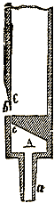 Fig. 351. -
Embouchure de flûte.629. Tuyaux à embouchure de flûte. - Il faut distinguer, dans l'étude des tuyaux, ceux à anche et ceux à embouchure de flûte. Dans ces derniers, dont nous nous occuperons d'abord, l'air arrive par un tuyau porte-vent a (Fig. 351), se rend dans une caisse A, s'échappe par une fente e, vient se briser sur la lèvre supérieure c de la bouche b et fait ainsi parler le tuyau. Tantôt celui-ci est ouvert à la partie supérieure, tantôt il est fermé, et dans ce dernier cas il est dit un bourdon. Il y a quelque analogie entre la vibration qu'exécute la lame d'air à la bouche du tuyau et le mouvement de la flamme que l'on voit souvent se produire à la petite porte d'un poêle que l'on vient d'allumer, dont le tirage est encore mal établi et où l'air entre par bouffées. Pour produire le courant d'air destiné à faire parler le tuyau, l'on se sert d'une soufflerie. Cet appareil consiste en un soufflet V (Fig. 352), mû à l'aide d'une pédale P ; on peut accélérer la vitesse du courant d'air en chargeant le soufflet de poids ou en pesant sur la tige T ; l'air est amené par un gros tuyau latéral dans une caisse que ferme la plaque C ; il peut s'échapper par les trous tels que c, d, sur lesquels on dispose les tuyaux ; mais il faut pour cela que les trous soient ouverts, car le canal dans lequel ils débouchent est fermé par une plaque K que maintient un ressort R ; en abaissant la touche a, on déplace la plaque et l'air peut entrer dans le tuyau.
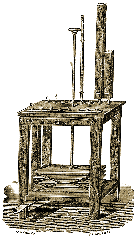 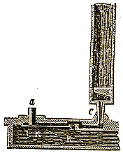 Fig. 352. - Soufflerie.
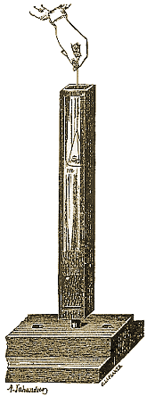 Fig. 353. - Preuve de l'existence
des nœuds et des ventres.630. Dans les tuyaux, c'est l'air qui vibre. - Le corps sonore dans les tuyaux, c'est l'air qu'ils contiennent et non la matière même du tuyau. Pour le prouver, on prend d'ordinaire trois tuyaux égaux, l'un de bois, l'autre de carton, le troisième de cuivre ; on les place sur le sommier d'une même soufflerie et l'on abaisse simultanément les trois touches qui leur correspondent ; l'unisson est parfait. En faisant parler les tuyaux successivement, on reconnaît que le timbre même n'est pas changé ; cependant il faut que les tuyaux aient une certaine épaisseur, afin d'empêcher la vibration de leurs parois qui pourraient accompagner celle de l'air.
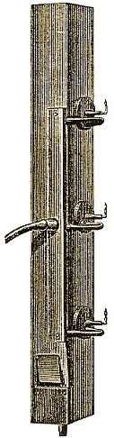 Fig. 354. Fig. 355. Preuve de l'existence des nœuds
et des ventres.631. Nœuds et ventres. - Il y a dans les tuyaux, comme dans les cordes, des nœuds et des ventres. c'est-à-dire des points où l'air est en repos et d'autres où il est vivement agité. La distance entre deux nœuds est dite une concamération : c'est une sorte de chambre limitée par deux parois d'air en repos, et au milieu de laquelle se trouve un ventre. L'existence des nœuds se prouve facilement en descendant dans un tuyau vibrant une membrane m (Fig. 353) recouverte de sable ; la membrane est agitée par le mouvement de l'air, surtout à l'endroit des ventres, mais elle reste immobile aux nœuds. Ces mouvements sont faciles à observer, parce qu'ils projettent le sable et que l'on a soin de faire en verre l'une des faces du tuyau. Une autre expérience fort curieuse est la suivante : Trois petits becs de gaz sont placés le long d'un tuyau (Fig. 354), les deux extrêmes en face de nœuds, l'autre en face d'un ventre ; près des becs, le gaz qui les alimente n'est séparé de l'air du tuyau que par de petites membranes verticales. Si le tuyau parle, les flammes qui sont en face des nœuds s'agitent et s éteignent, tandis que l'autre reste immobile. Ceci montre qu'en face des ventres l'air, quoique en mouvement, ne possède ni dilatation ni compression ; qu'aux nœuds au contraire l'air, quoique ne possédant aucun mouvement, éprouve des variations de force élastique qui lui font exercer des pressions variables sur la paroi et agiter les flammes. Ce fait montre pour quoi, en ouvrant un tuyau en des points tels que a, b, c (Fig. 355), le son n'est pas altéré quand ces points sont en face d'un ventre et qu'il change s'ils sont en face d'un nœud. L'ouverture à l'endroit d'un ventre ne produit aucun effet, parce qu'elle ne peut amener aucun changement dans l'état de condensation ou de dilatation de l'air intérieur.
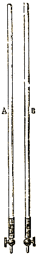 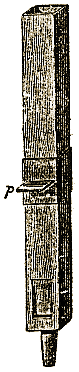 Fig. 356. Fig. 357. Tuyau pour la
loi des tuyaux
sonores.Relation entre les
bourdons et les
tuyaux ouverts.632. Loi des tuyaux sonores. - Quand on modifie légèrement l'embouchure d'un tuyau, ou, ce qui est bien plus commode, que l'on force un peu le vent, la hauteur du son produit change, mais d'une manière discontinue ; le son saute brusquement d'une valeur à une autre. Pour faire l'expérience, on se sert d'ordinaire de longs tuyaux de verre (Fig. 356), l'un A, fermé par en haut, l'autre B ouvert ; on place ces tuyaux sur une soufflerie, on les fait parler avec un courant d'air aussi faible que possible et dont on augmente peu à peu la vitesse. On constate ainsi les lois suivantes :
1re Loi. Les nombres de vibrations qui correspondent au sons rendus successivement par un même tuyau ouvert suivent la loi des nombres naturels, de sorte que les sons obtenus forment une succession d'harmoniques.
2e Loi. Les nombres de vibrations qui correspondent aux sons rendus successivement par un même bourdon suivent la loi des nombres impairs, de sorte que les sons obtenus forment une succession d'harmoniques impairs.
Si l'on prend un tuyau ouvert et qu'en son milieu on le bouche en poussant une clavette p (Fig. 357), le son n'est pas altéré, d'où l'on conclut :
3e Loi. Un bourdon donne le même son qu'un tuyau ouvert de longueur double.
633. Relation entre le son produit et la situation des nœuds et des ventres dans les tuyaux ouverts. - Si, à l'aide d'une membrane recouverte de sable que l'on descend dans le tuyau, on recherche la position des nœuds et des ventres, on voit que si un tuyau ouvert donne le son le plus grave qu'il puisse produire, il y a un nœud au milieu N (Fig. 358) et des ventres V et V1 à chaque extrémité. Si, forçant le vent, on obtient le premier harmonique, on trouve au milieu du tuyau un ventre V ; il y en a un autre à chaque extrémité en V' et V'1 ; deux nœuds, N, N', séparent les ventres. Si, forçant le vent davantage, on obtient le deuxième harmonique, un nœud N reparaît au milieu, il y en a deux autres N', N1, et quatre ventres V1', V1, V, V'.
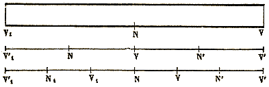
Fig. 358. - Position des nœuds et des ventres dans les tuyaux ouverts.En résumé, si l'on prend pour unité la longueur du tuyau, les longueurs des concamérations qui se produisent avec chaque son ont pour valeurs 1, 1/2, 1/3 etc. Un raisonnement simple fait voir qu'il doit en être ainsi ; en effet, chaque extrémité du tuyau doit être un ventre, parce que l'air, s'y trouvant en contact direct avec l'atmosphère, ne peut y être ni comprimé ni dilaté ; entre deux ventres il y a forcément un nœud, et il n'y en aura qu'un dans le cas le plus simple, c'est-à-dire quand le tuyau rendra le son le plus grave possible ou son fondamental. Si, au lieu d'un, deux nœuds se forment dans le tuyau, il y a nécessairement un ventre entre eux, et comme c'est le cas le plus simple après celui qui correspond au son fondamental, cette division doit conduire au deuxième son ; il est facile de poursuivre ce raisonnement.
634. Relation entre le son produit et la situation des nœuds et des ventres dans un tuyau bouché. - Dans les bourdons, le fond étant inébranlable, l'air qui est au contact doit rester immobile, mais conserve la propriété de pouvoir être comprimé ou dilaté ; le fond est donc un nœud N (Fig. 359) ; il y a nécessairement un ventre V à l'ouverture, mais il peut n'en point exister d'autre dans le tuyau.
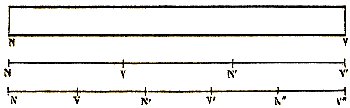
Fig. 359. - Position des nœuds et des ventres dans tes tuyaux fermés.
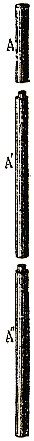 Fig. 360. Ce dernier a donc une longueur égale à une demi-concamération quand il rend le son fondamental ; un tuyau ouvert a dans les mêmes circonstances une longueur égale à une concamération entière, d'où la justification de la troisième loi. Si l'on suppose un autre mode de division de l'air, on voit que le plus simple ensuite conduit à deux nœuds et deux ventres, et que la longueur de la concamération est le tiers de ce qu'elle était précédemment. Le mode de division le plus simple après conduit à trois nœuds et trois ventres. Les longueurs des concamérations qui se produisent avec chaque son ont donc pour valeur 1, 1/3, 1/5, etc., en prenant pour unité le double de la longueur du bourdon.
Une expérience permet de mettre en évidence la situation des nœuds et des ventres dans les bourdons. On prend une flûte bouchée par en haut (Fig. 360) ; on la fait parler et l'on force le vent jusqu'à ce qu'elle donne le cinquième harmonique du son fondamental. On enlève le cinquième supérieur A qui se dévisse, puis, plus tard, les deux cinquièmes suivants A'. Le tuyau ne cesse pas de rendre le même son, ce qui prouve que chaque fois il a été ouvert à l'endroit d'un ventre.
635. Relation entre le nombre des vibrations et la longueur de la concamération. - Les deux moitiés d'une concamération ne contiennent pas de l'air dans le même état : dans l'une il y a dilatation, dans l'autre condensation, et cela alternativement. L'air s'éloigne du nœud initial pour se porter vers l'autre, puis revient se presser à son point de départ, et c'est en cela que consiste une vibration ; la durée de cette vibration correspond donc au temps que met l'ébranlement de l'air à se propager d'un bout à l'autre de la concamération et à revenir à son point de départ. Si l'on considère deux concamérations consécutives, elles ne sont pas identiques, car si l'une commence par une dilatation, l'autre commence par une condensation ; au contraire, on trouve le tuyau partagé en portions identiques quand, à la place d'une seule concamération, on en considère une série de deux successions, ce que l'on appelle une onde ou une ondulation. D'après ce que nous avons dit précédemment (586), la durée d'une vibration est le temps qu'il faut au son pour parcourir la longueur d'une onde. Soit donc n le nombre de vibrations pendant une seconde correspondant à un son rendu par un tuyau d'orgue, soit l la longueur de l'onde et v la vitesse du son, l'on a
v = nl.
On peut mesurer l, évaluer n à l'aide de la sirène et par suite déterminer v. C'est ainsi que Dulong a pu connaître la vitesse du son dans les différents gaz.
636. Tuyaux à anche. - Dans les tuyaux à anche, le vent ne pénètre aussi que par saccades. L'anche est une lame' : élastique l (Fig. 361) fermant une sorte de gouttière r appelée rigole ; une tige z, appelée rasette et passant à frottement dur dans un trou b, limite la partie vibrante de l'anche. Celle-ci est disposée dans un tuyau porte-vent, t, placé sur la soufflerie, et l'air ne peut s'échapper qu'en soulevant l'anche ; mais celle-ci, déplacée de sa position d'équilibre, se met à osciller et à ouvrir et à fermer à intervalles égaux l'orifice de la rigole. Au-dessus est le tuyau d'échappement t'. L'anche peut être battante, c'est le cas de la précédente ; à chaque oscillation elle vient frapper les bords de la rigole ; mais elle peut être libre (Fig. 362) ; dans ce cas elle pénètre à l'intérieur de la rigole p ou bien en sort à chaque oscillation, sans qu'il y ait de chocs donnant toujours à l'instrument un son criard. Le tuyau d'échappement a souvent la forme d'un cornet s.
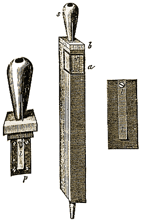 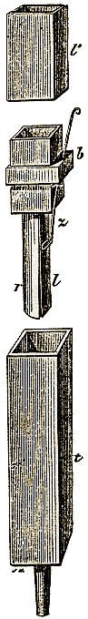 Fig. 361. - Tuyau à anche libre. Fig. 362. - Tuyau à anche battante. 637. Instruments à vent. - Les instruments à vent ne sont autre chose que des tuyaux que l'on fait vibrer ; d'ordinaire, l'embouchure est une anche qui se réduit souvent aux lèvres mêmes du musicien. C'est le cas de la trompe de chasse, du cor, de la trompette, du clairon. Les instruments précédents sont les plus simples de tous ; ils consistent en un tube terminé d'un coté par une embouchure, de l'autre par un évasement appelé pavillon. Ces tuyaux ne donnent jamais le son fondamental, mais seulement des harmoniques élevés de ce son ; or nous avons vu, en traitant des harmoniques (611), qu'à partir du huitième, leur succession donne assez bien les notes de la gamme, ou plutôt les suivantes :
ut ré mi fa # sol la b la # si ut2.
Le cor et la trompe, pouvant produire ces harmoniques, ont donc une gamme à leur disposition ; d'ailleurs en plaçant la main dans le pavillon on modifie les sons et on leur donne la justesse qui leur manque. La faible longueur des tuyaux constituant la trompette et le clairon ne leur permet de donner nettement que les harmoniques 3, 4, 5 et 6 dont les intervalles entre eux sont ceux des notes sol, ut, mi, sol2.
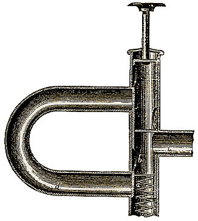
Fig. 363. - Piston du cornet à piston.Dans le trombone, on modifie le son en faisant varier la longueur du tuyau ; c'est encore le même principe qui est appliqué dans le cornet à piston. Dans cet instrument, les ondes circulent dans l'espace a b c (Fig. 363) ; mais si l'on abaisse le piston, l'onde suit la route a b d avant d'arriver dans le tube c ; la longueur du tuyau est ainsi augmentée de toute celle de d.
La clarinette, le hautbois, le basson, ont une anche spéciale, la longueur du tuyau est invariable et l'on ne cherche pas à produire les harmoniques du tuyau ; mais des trous placés latéralement, et que l'on ouvre ou ferme à volonté, permettent de modifier la position des nœuds et des ventres, et de changer, par suite, la valeur du son. L'ophicléide est un instrument du même genre, sauf que les lèvres font encore fonction d'anche.
Dans la flûte, ce n'est plus une anche qui vibre ; l'air est dirigé contre un biseau sur lequel il vient se briser. C'est le même mode d'ébranlement que pour les premiers tuyaux que nous avons étudiés et que l'on a appelé pour cette raison tuyaux à embouchure de flûte.